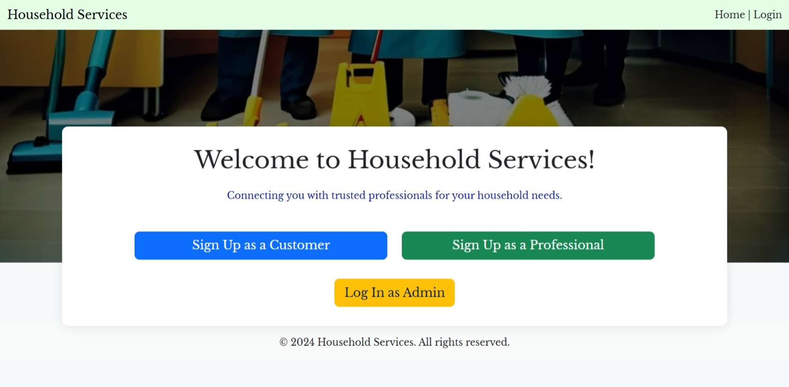

A multi-user Flask application connecting customers with skilled service professionals.
Household Services Hub is a full-stack web application designed to bridge the gap between customers seeking household help and professionals offering their services. The application supports three distinct user roles—Admin, Professional, and Customer—each with a dedicated dashboard and functionalities tailored to their needs.
The application is built with a feature-rich, role-based access control system to provide a tailored experience for every user.
A powerful dashboard to manage the platform. Admins can oversee user activity, manage service categories, and approve/reject new professional registrations.
Professionals can create a detailed profile, list their services with custom pricing, manage incoming service requests, and track their job history and earnings.
Customers can easily sign up, search for services with filters, send requests to professionals, and track the status of their jobs from "Pending" to "Completed."
Built on a modular MVC-inspired architecture using Flask. Features a responsive frontend with Bootstrap and a well-defined database schema designed with ERAlchemy.
Backend: The core logic is handled by Flask, managing routes, request handling, and business logic. Flask-SQLAlchemy is used as the ORM to interact with the SQLite database, mapping Python objects to database tables.
Frontend: The user interface is built with HTML5, CSS3, and Bootstrap 5, ensuring a fully responsive design. Jinja2 is used as the templating engine to dynamically render data from the backend into the frontend pages.
Database Design: The database schema was carefully designed and visualized using ERAlchemy to map the relationships between Users, Roles, Services, and Requests, ensuring data integrity and efficient queries.
This project was developed as part of the Modern Application Development I (MAD1) course at the Indian Institute of Technology, Madras. It serves as a comprehensive demonstration of full-stack development principles, including robust database modeling, secure back-end logic, and user-centric front-end design. The application's architecture is built to be scalable and maintainable, showcasing skills relevant for real-world application development.